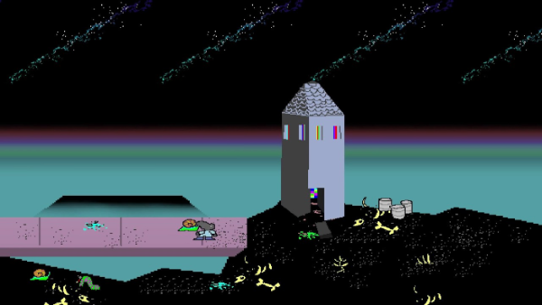
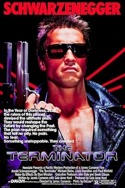

|
Interview with Jake Clover
27.09.2017
HellO, how are Yooou today??
I'm feeling incredible today and I don't have a sore throat 2. So, what inspired you to make games? When did you start? I used to play lots of small online games when I was a kid (such as ones on orisinal.com) and wished I could make my own ones. I started making games in 2007 and one of my first games I made was roadkill bonanza about running over sheep. I uploaded it to yoyogames under the name 'fathead' and someone commented 'it's nice to have a break from looking after them and run over them instead' so I felt very good about the game 3. Do many people play your games? Do you get any comments? my game usually get maybe a couple of thousand plays. I think my most popular one was Nuign Specter, and yeah I get comments like "This is the absolute WORST game I've ever played." and "how to keep youself awake at 3:40 am" Nuign Specter
4. Are there any of your games that you want more people to play?
I don't know, i suppose so. for some reason I like Death of Augnob and keep coming back to it and think, how did I manage to actually make it kind of good, like. and so yeah maybe if more people played that one even thoughts it's pretty glitchy  Death of Augnob
5. Do you have any plans for the future? Will you still be making games?
Yeah probably but i'm into making sculptures a bit as well and I like drawing a lot um hahaha yeah uh I'm hungry 6. What is the worst way to make a game, and what is the best? From my experience I make terrible games when I take things too seriously and forget to enjoy myself and have a laugh. usually this is if i get caught up focusing too much on the technical side of things and everything begins to feel slow and heavy and empty. I think my games can be good if I manage to have a relatively not too give a shitty attitude, like don't worry too much about small things and just keep it simple and have fun, and even leaving in glitches can make things more fun or give you other ideas 7. Any cool movies you'd like to recommend? HMMMMMM Terminator is pretty cool movie. Collateral is good. I can't think of any other movies  Terminator
8.
Here comes the riddddddle, SO, 2 men and 3 women walked into a shop,
but only 2 people walked out of the shop. As the news said, a shopping
cart ran over someone, what do you think happened?
The women's daughter who she went in the shop with grabbed the trolly and VRd it staright into the mans forehead and he was wailing on the ground. He was a farmer and his wellingtons got all caught up in the muesli bar section (he was on his way to the ice cream fridge) yet the wellies disagreed with his decisions and gravitated towards the woman's daughter like snake heads after a pray, the man was crushed by the trolly and they flopped without the live host 9. Would you either have a great breakfast and horrible dinner OR no food but all your dreams will come true in 30 days? No food and my fream come true in 30 days!!!!!!!!!! 10. Your catchphrase? Get me a scroll you piece of cabbage or else I'll get you
Thank you Jake Clover!
Back to Texts |